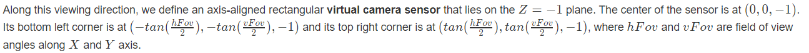

In this project, we implemented all the necessary features of a ray-tracing rendering program. Ray tracing is a rendering technique that uses a simulation of the behaviors of light from a camera source to produce accurate global illumination. This unlocks the potential for hyper-photorealistic images. First we implemented the basic ray tracing mechanics for normal shading. Then, we built the necessary mechanisms for BVH Acceleration which allowed us to render more complex meshes. Next, we implemented two different types of light sampling, direct light and hemisphere. Lastly, we used a simple algorithm for adaptive sampling to identify sampling convergence.
In this part, we implement ray generation. Ray generation is the initial step in ray tracing where rays are cast from the camera into the scene. There were several different steps that were crucial for our implementation.
First, we implemented the rendering function generate_ray(). The purpose of this function was to take in image coordinates, transform them to the camera space (the coordinates from the perspective of the camera), and generate a ray in the camera space (from the camera to the coordinate in the camera perspective), then convert this ray back to the world space. Thus, we could convert a normalized image coordinate to rays in the world space, which is the foundation for tracing rays through the scene. Mathematically, we took the x and multiplied it by the tan of the horizontal and vertical field of views divided by two respectively, as defined in the problem

Then, we inputted the coordinates into the ray constructor and set their max_t and min_t to fClip and nClip respectively (their clipping planes) then outputted the ray.
Next, we generated the pixel samples, through implementing the raytrace_pixel() function. In this function, we built on what we built in the previous section, generate_ray(), by using generate ray to estimate the integral of radiance over a pixel, so we could then represent the inputted corresponding pixel in sampleBuffer with a Vector3D that represents the integral that we just calculated. Through this function, we were able to estimate the integral of radiance by generating multiple random rays through the pixel and computing the radiance along each ray. As seen in the later parts, this would become useful for simulating how light interacts with the scene and contributes to the final image.
Next in the process, we implemented Ray-Triangle Intersection. The purpose of this is that now that we have rays generated and traced properly, we want to ensure that rays intersecting with triangles get properly detected and we properly detect their intersection points. To do this, we first implemented the has_intersection function, which through a series of disqualifiers, determined if the point was within the triangle, or in other words, intersected with the triangle.
These rules included:
In this section, we constructed the bounding volume hierarchy, whose purpose was to optimize a path tracer and increase the speed of rendering complex geometries.
To implement the BVH construction algorithm, we first began with a list of all scene primitives, such as triangles and spheres, that need to be rendered, and initialized with an empty BVH data structure with a root node (to be implemented as a binary search tree later). Specifically, The constructor BVHAccel::BVHAccel initializes the BVH with a vector of primitives and a maximum leaf size. It also sets the primitive member variable to the input vector and constructs the BVH using the construct_bvh function.
To start construction, we went through a recursive process, starting with the root node. At each step of the recursion, a node in the BVH is created to represent a bounding volume that encapsulates a subset of primitives. Then our algorithm proceeds recursively until each leaf node contains “maximum leaf size” primitives.
Bounding Box Calculation: for each node in the BVH, we calculated the bounding box that encloses all primitives contained within that node. Through the construct_bvh function which calculates the bounding box that encloses all primitives within the given range. This bounding box represents the spatial extent of the primitives and is used for efficient intersection testing during traversal.
To determine when to terminate the recursion and create leaf nodes, we calculated if the number of primitives in the current node is less than or equal to the maximum leaf size
There were two heuristics we implemented
We intially chose the centroid heuristic for simplicity, and later implemented the surface area heuristic for extra credit (mentioned below in the extra credit section).
After splitting, the range of primitives is split into two subsets, and we recursively call the construct_bvh function on each subset to create child nodes and eventually leaf nodes.
We also implemented the has_intersection and intersect functions, to check for intersection between a ray and the bounding box of a BVH node. Here, we check if the node is a leaf node, then check for the intersection between the ray and each primitive contained within the node.
Once the construction process is complete, the BVH structure is ready for use in accelerating ray tracing operations, such as ray intersection testing during rendering.
Comparing the average rendering times over 5 renders for moderately complex geomertries with and without BVH acceleration, we found:
cow.dae took 52 seconds without BVH and 0.13 seconds with BVH
beetle.dae took 25 seconds without BVH and 0.09 seconds with BVH
maxplanck.dae took 642 seconds without BVH and 0.19 seconds with BVH
From these results, we can truly see how powerful a BVH tree is in reducing time to detect intersections. It allows us to render complex meshes in the order of miliseconds rather than seconds. This speedup is crucial when it comes to rendering dynamic scenes where we need extremely quick renders. The reason we get this speedup is because, during traversal, rays are quickly tested against these bounding volumes, allowing large portions of the scene to be pruned if they don't intersect with the ray's path. This hierarchical culling drastically reduces the number of individual object-ray intersection tests needed, resulting in faster rendering of complex scenes by efficiently exploiting spatial coherence and minimizing unnecessary computations.


In this part, we started simulating light transport through the scene to render images with realistic shading. The two sampling methods we implemented were uniform hemisphere sampling and light importance sampling.
Uniform hemisphere sampling involves using the Monte Carlo estimator to approximate the integral over all light arriving in a hemisphere around a hit point. We uniformly sample incoming ray directions in the hemisphere and check if a raw going from the point of interest in the sampled direction intersects a light source. We can then utilize the reflection equation to calculate the amount of outgoing light. In our implementation for uniform hemisphere sampling, we begin by setting up a coordinate system for the hit point. From here we have an object-to-world space matrix and world to world-to-object space matrix. We also have a few variables we will need for our sampling loop. In the function, we define the hit point hit_p, the vector pointing towards the source of the ray w_out, and num_samples which is the total number of samples for our estimator. Then we have the sampling loop which does the Monte Carlo estimation as explained before. Inside this loop, we get a sample from the hemisphere sampler to sample points in a hemisphere around the hit point. This gives us an object space coordinate which we convert to world space. From this, we can construct the sample ray using the hitpoint and the converted world space sample point. We then check if this ray intersects with any primitive using the BVH tree. If we record an intersection, we can then use the reflection equation to calculate a single sample: newIsect.bsdf->get_emission() * isect.bsdf->f(w_out, s) * cos_theta(s). Note that if the intersection is not a light source, its emission will be zero and the sample will not contribute to the total. Also, each sample is uniform probability so after summing all the sample values, we can divide by the number of samples to get our lighting estimate for our ray.
Light importance sampling has the same goal as uniform hemisphere sampling, but instead of sampling points around the hit point, we want to sample directions between each light source and the hit point. If we see there are no intersections between the hit point and the light source, then we know that this light source casts light onto the hit point and we can use the reflectance equation. In addition to the previous sampling method, we can now also render images with only point lights. In our implementation, we iterated through all the lights in the scene. If the light source was a point light, we only need to sample once, as all samples from a point light will be the same. If it wasn’t, we take ns_area_light samples and average these samples to get our reading. To calculate the sample we use the given sample_L function which samples the light from the light source to a hit point. When using the sample_L, we get the probability density function evaluated at the vector which represents the probability of that sample. We must divide the sample by this value before adding its contribution to the total since it is no longer uniform.
Contribution for point light: L_out += s*isect.bsdf->f(w_out, dir)*cos_theta(dir))/write_pdf;
Contribution for non-point light: (sum of s * isect.bsdf->f(w_out, dir) * cos_theta(dir)) / write_pdf for each sample)/num_samples
From the images below, we can see a clear difference between uniform hemisphere sampling and direct light sampling. The uniform hemisphere sampling is significantly noisier than uniform hemisphere sampling. The direct light sampling renders with less light rays are clearer than uniform hemisphere sampling renders with more light rays. Since uniform hemisphere sampling distributes rays evenly over the hemisphere above a surface, it allocates samples to all directions even when little to no light is actually arriving from there. In direct light sampling, we sample towards directions with actual light contributions. This way, we practically bias sampling towards light sources providing a significantly clearer and less noisy render. We can also see how the number of light samples affects noise from these images. In the last section which compares the bunny with different light samples, we can see that the higher the number of samples, the less noisy our render is. This makes intuitive sense as more samples more accurately represents the true value of the integral of radiance.


Global illumination encompasses all forms of lighting in a scene, including both direct and indirect lighting. Indirect lighting refers to the light that is not directly emitted from a light source but rather arrives at a point in the scene after undergoing multiple ray bounces.
To implement this, we created the recursive function, at_least_one_bounce_radiance, which uses the one bounce radiance + the radiance from extra bounces at this point. We also add a depth field for each ray in raytrace_pixel to set the number of bounces. To simulate extra bounces, we recursively call at_least_one_bounce_radiance to calculate the radiance from another point and incorporate that value into the total using the radiance equation from the last part.
The recursive logic:
If the current depth of the ray (indicating the number of bounces it has taken) is not equal to 1:
If the current depth of the ray is 1:
One issue with setting a maximum depth is that it leads to a biased estimate. We introduce Russian roulette by culling paths according to a set probability. In our implementation, we cull with a probability of 30 percent to reduce this bias.


Above we can see how global illumination captures ambient light as well as light directly from the source in a realistic manner.


Above we can see the differences between direct and indirect illumination. With direct illumination only, we get the one bounce ray which doesn't really capture ambient light but emphasizes where the light source directly hits the primitives. With global illumination only, we see more of the ambient light reflected off surfaces, giving a smoother and more realistic lighting appearance overall. However, we don't see any emphasis from where the light source directly hits the primitives.


Above we can see the mth bounce of light for different ray depths. Between the 2nd and 3rd bounce of lights, we see a significant reduction in the overall amount of global light captured. This is because as the light bounces multiple times, some of it is absorbed by the primitive. It makes intuitive sense that as the value of m increases, we see less and less global light in the image. Compared to the rasterization based pipeline, this shows how we ray tracing can capture the global interactions of the light source rather than only the pixel's direct relation to light source. The ray's bouncing throughout the scene creates a hyper-photorealistic lighting scene.


Above we can see how the different ray depths impact the image by introducing more and more ambient light. While the lighting differences decreases as the number of bounces increases, we can see that with more bounces, the overall render is brighter. Without russian roulette here, we can observe that the images almost seem too bright, especially in the m=5 case. This is because using a constant number of bounces can bias the lighting in our image.


Above we can see how increasing the samples-per-pixels reduces the noise in the image. With extremely low samples per pixel, our Monte Carlo estimator of the pixel's final output does a poor job of estimating the true integral. As we increase the sample size, we get closer to the true value of the integral providing a realistic image with minimal noise.
One solution to reducing noise when using Monte Carlo path tracing is to increase the number of samples of pixels. However, this could potentially lead to oversampling in areas that converge quickly from low sampling rates. Oversampling is wasted computation which can be avoided through the introduction of an adaptive sampling algorithm that detects whether a pixel has converged. Our adaptive sampling algorithm determines if a pixel has converged by analyzing the mean (μ) and standard deviation (σ) of sampled ray values. It computes a threshold (I) based on the number of samples (n) and standard deviation. If I is less than a maximum tolerance factor times μ, it concludes convergence. This threshold ensures that with 95% confidence, the average illuminance in the pixel falls within a certain range. The choice of 1.96 stems from the 95% confidence level in statistical analysis. If the condition is met, further ray tracing for that pixel is halted.
To implement this, in our sampling loop in raytrace_pixel, we keep track of two values s1 and s2 which are the sum of the values and the sum of the squares of the values respectively. Using s1 and s2, we can calculate μ by doing s1/n and calculate σ^2 by doing (1/(n-1))*(s^2-(s1^2/n)). This helps us avoid having to calculate every sample’s illuminance to compute them. We also don’t check if a pixel converges each sample since this is costly. Instead, we use the samplesPerBatch variable to determine how often we should check if a pixel has converged using ns_aa as the upper bound on a number of samples. We also fill sampleCountBuffer with the appropriate number of samples so we can view our sampling rate images.


Above we see the bunny and spheres rendered using adaptive sampling. From these images, we can observe how the sampling rate is relatively low in areas with constant lighting. For example, the back and side walls of the Cornell box which do not have shadows converge quickly. Parts which have more variability in lighting, such as the bunny and spheres itself, converge after many more samples. This intuitively makes sense as our samples are more likely to be different in complex areas rather than areas with constant light.
We implemented the surface area heuristic for splitting in our BVH. The Surface Area Heuristic (SAH) is a method used in constructing a Binary Space Partitioning (BSP) tree, particularly in constructing Bounding Volume Hierarchies (BVHs). BVHs are hierarchical data structures used in ray tracing to efficiently organize and traverse objects in a scene. The Surface Area Heuristic aims to partition the bounding boxes of objects in a scene into smaller groups to form a hierarchical tree structure. The idea behind SAH is to minimize the cost of traversing the tree by finding optimal splitting planes that minimize the expected traversal time.
The process involves calculating the cost of a split based on the cost of traversal and the surface area of the resulting bounding boxes. Our cost function was defined as, leftCount * leftBox.surface_area() + rightCount * rightBox.surface_area(). Since there are many different split points which could be optimal, our implementation takes the sorted centroids list and checks the cost of splitting at each point by calling the sah() helper function. We then use the split point which has the lowest associated cost.
Here is our implementation for the sah helper which calculates the cost of splitting as explained above:
Through this project, we learned how important it was to plan ahead of time for each part. In addition, breaking up the parts into smaller tasks helped us parallelize implementations. We used a mixture of breaking up tasks as well as peer-programming to improve the rate and quality of our code.